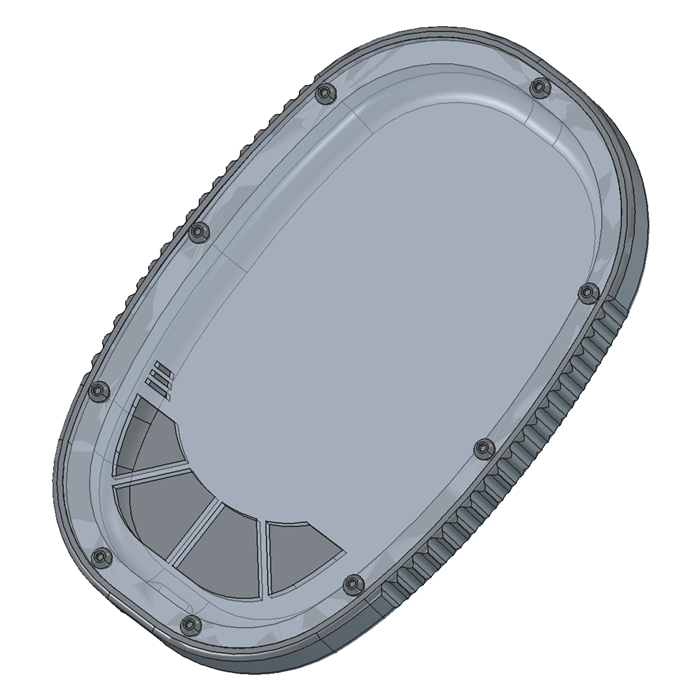
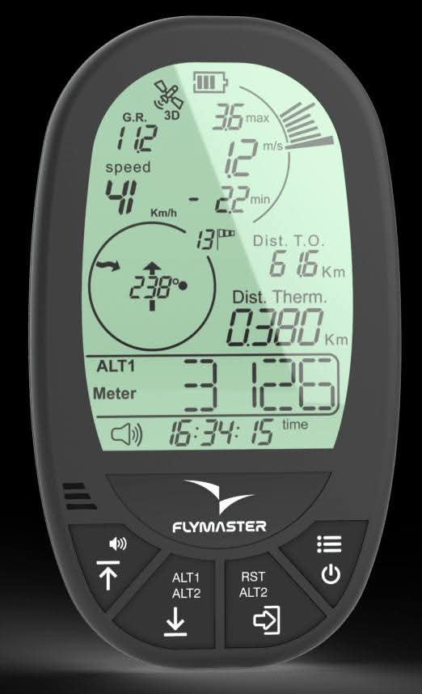
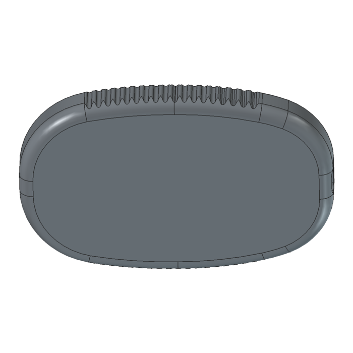
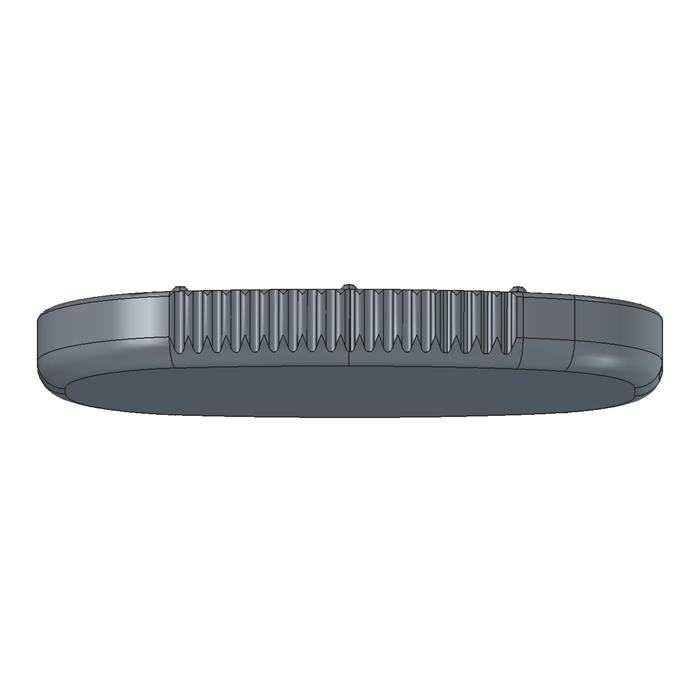

Design in SolidWorks
I modeled the case around the GPS unit as a top and bottom shell, with a recessed pocket for the acrylic window and bosses for the fastener inserts.
// fabrication · powered paragliding
A custom case for my flight instructor's FlyMaster GPS — designed in SolidWorks, 3D printed, and finished with a laser-cut acrylic window.

My flight instructor needed a case for their FlyMaster GPS, so I designed one from scratch. It's a 3D-printed body with a clear acrylic panel over the display, fastened with screws that thread into brass PEM inserts set into the plastic.
The project brought three processes together: CAD modeling, FDM printing, and laser cutting. The rest of this page covers each one.
From CAD model to finished part.
I modeled the case around the GPS unit as a top and bottom shell, with a recessed pocket for the acrylic window and bosses for the fastener inserts.
I exported the window outline from SolidWorks as a DXF and cut it from clear acrylic on a 40W CO2 laser, which leaves clean, flame-polished edges.
I pressed threaded PEM inserts into the printed case with heat. The melted plastic flows around the insert's knurling and locks it in, so the window screws thread into metal rather than plastic.


